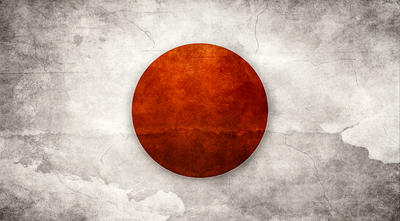
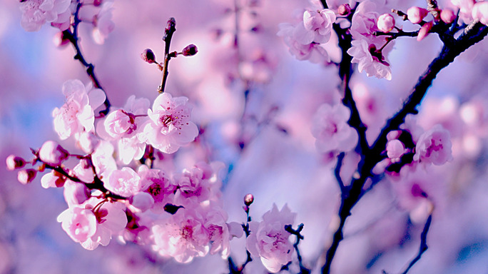
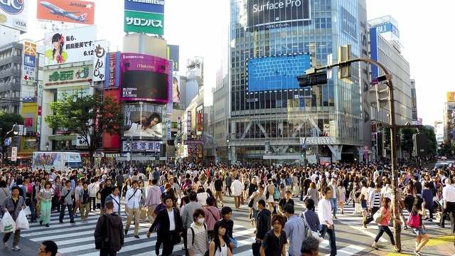

Japan
 Япония – это, наверное, самая необычная страна на планете. Многие из тех, кто побывал здесь, называют ее страной иной цивилизации. И правда, здесь много что необычно и подчас не поддается стандартному логическому, этическому и культурному мышлению. А все из-за того, что долгое время Япония была закрытой страной для всех иностранцев. Ограничив в XVII веке иностранное присутствие в стране, Япония таким образом защитила свою культуру и традиции от иностранного влияния.
Климат
Из-за того, что Япония сильно вытянута с севера на юг, на ее территории можно наблюдать существенные различия в климате. В целом климат Страны восходящего солнца морской и влажный. Снег — погодное явление, присущее всей территории страны, но на юге он идет всего около недели, а на севере — чуть более 95 дней.
Север острова Хонсю и весь остров Хоккайдо — области с наиболее резким климатом. Лето здесь достаточно короткое, но жаркое, а зима холодная — средняя температура -8°С. Горный климат в этой местности вообще больше всего похож на субарктический.
В низменностях Сикоку, Кюсю и Хонсю до равнины Канто климат субтропический, зимой температура достигает +4°С, а летом +30°С. В этих местах лету предшествует сезон дождей, который начинается в середине мая и заканчивается в июне.
Основным бичом Японских островов в летний период являются тайфуны. Тропические зоны низкого давления (тропические циклоны) образуются в тропической части Тихого океана, над перегретой водной поверхностью. На японском языке они называются "тайфу", от этого названия и образовалось слово "тайфун". Сезон тайфунов в Японии начинается в июне и заканчивается обычно в октябре.
Лучшее время для посещения Японии — это март-апрель и октябрь-ноябрь. В этот период температура воздуха наиболее приятная для пребывания, дождей практически нет и активность тайфунов минимальна.
Города и регионы
Япония официально делится на 8 регионов, 47 префектур и 3300 муниципальных образований. На севере расположены регионы Хоккайдо и Тохоку. В центре самого большого из островов японского архипелага Хонсю расположены регионы Тибу, Канто и Кансай. На юге и юго-западе располагаются регионы Тюгоку, Сикоку и Кюсю. Острова Окинава располагаются в одноименном регионе.
Самые крупные и известные города – Токио и Киото – располагаются в регионах Канто и Кансай соответственно. И если Токио является политической столицей Японии, то Киото по праву принадлежит звание культурной столицы. Вообще, центральные регионы Японии являются самыми популярными среди туристов – здесь расположено больше всего культурных, исторических и природных объектов, вызывающих интерес у путешественников.
Общение
Официальный язык страны – японский. Диалекты несколько отличаются в разных регионах, но в целом, если вы знаете общий японский язык хотя бы на начальном уровне, вас поймут везде. А вот с английским все гораздо сложнее. На языке туманного Альбиона говорят более-менее сносно в центральных регионах Японии. Чем дальше от центра и от больших городов, тем хуже с пониманием. На Кюсю, например, в южной его части, даже в некоторых дорогих курортных отелях персонал вообще не говорит по-английски. И вы не найдете в кафе меню на английском. И указателей, и названий улиц на английском тоже нет. Японцы не очень-то жалуют иностранцев (согласно опросу 2005 г., 50% японских отелей никогда не принимали у себя иностранных туристов и 75% из них не желали бы видеть иностранных гостей и в будущем).
 Защищено АО «Лаборатория Касперского», 2017
Защищено АО «Лаборатория Касперского», 2017